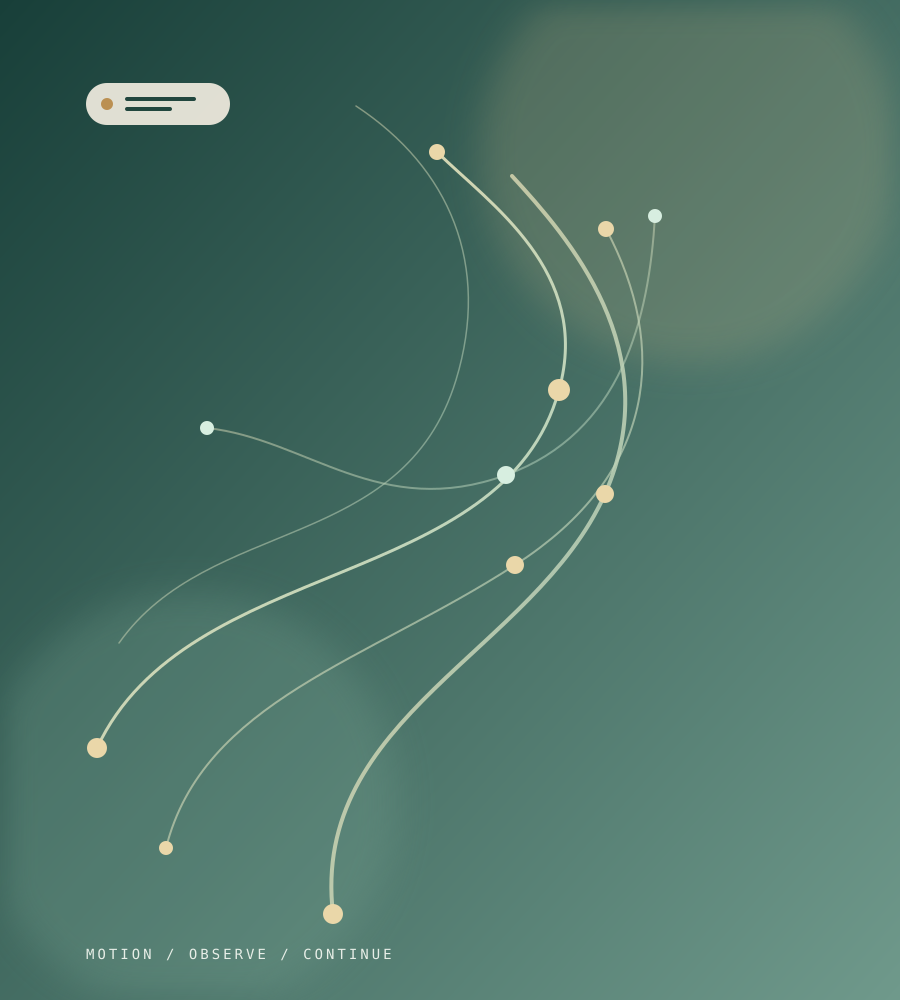
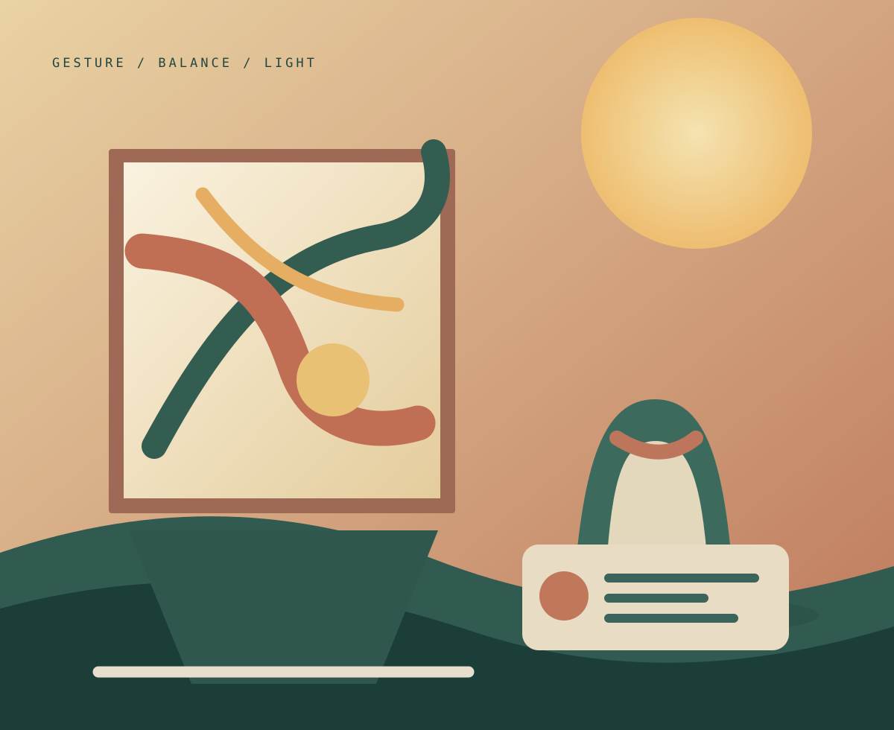

See clearly
A guided KŌMØ Motion Session creates a useful snapshot of how you move today.
Cannes · French Riviera · Limited 2026 editions
A two-night KŌMØ immersion for people who want to move well, create freely and stay capable of the life they love.
KŌMØ Riviera Signature Weekend
This is the KŌMØ idea, brought to the Riviera: movement assessed with care, ideas shared around a table, and space to feel what a more capable life might look like.
Hosted in Cannes, the Signature Weekend brings together locomotor longevity, contemporary art and Mediterranean hospitality. It is designed to leave you with a clearer personal direction—not a list of rules.
Meet the wider KŌMØ ecosystem ↗A guided KŌMØ Motion Session creates a useful snapshot of how you move today.
Simple, intelligent practices reconnect capacity with the rhythm of everyday life.
Leave with a personal roadmap and a natural bridge into the KŌMØ community.
The Riviera as a setting, not a distraction
We use the Mediterranean setting deliberately: not to escape real life, but to remember the conditions that allow us to live it more fully.
The programme
The programme is intimate by design. Exact venues may shift by edition; the sequence, care and sense of occasion remain.
Check in at the selected boutique hotel or private host venue. There is time to settle in and meet the group.
A relaxed, seasonal welcome table with local wines, small plates and the first conversations of the weekend.
Longevity in motion. A personal, evidence-informed perspective on protecting freedom, confidence and capacity across the years.
A sea-facing mobility, breath and posture session—designed to be memorable enough to use at home.
Breakfast without hurry, followed by a practical conversation around recovery, energy and consistency.
A guided, non-diagnostic functional movement assessment and a private debrief of the results.
Seasonal cooking and a generous pause in a setting selected for its light, calm and conversation.
A private artist-led studio session about gesture, balance and attention. No art experience is needed.
Time for the sea, the spa or a quiet walk. Individual KŌMØ review slots are available.
An intimate seated dinner: chef-led Mediterranean cooking, thoughtful pairings and good people around one table.
An optional low-intensity walk and a final movement ritual before the group comes together again.
A relaxed closing meal with conversation around the conditions for a long, capable and enjoyable life.
Private synthesis, next practical priorities and an optional onward path through KŌMØ Pulse and the KŌMØ network.

The KŌMØ Motion Session
The weekend includes a KŌMØ Motion Session: a guided way to notice the movement capacities that help you live the life you choose.
Movement tasks explore functional mobility, balance, strength, coordination and confidence at your own pace.
We turn observation into a clear conversation about what is supporting you and what deserves attention.
You leave with a concise practical roadmap and the option to continue with KŌMØ on your own terms.
The Motion Session is educational and non-diagnostic. It does not replace a medical consultation, diagnosis or treatment.
Art as a movement practice
Led by a recognised Cannes-based artist, the workshop shifts the pace of the weekend. It asks guests to experience line, balance and attention through the hand.
Every guest leaves with an original work: a physical memory of the weekend and its own particular gesture.

Included in every edition
Once you arrive in Cannes, the experience is hosted from beginning to end. Accommodation is included in the Signature Stay and arranged individually for private editions.
Aperitif dinner and Dr Chapon’s opening talk.
Guided movement session, debrief and personal roadmap.
Breakfast, lunch, Saturday dinner and Sunday brunch.
Private tuition, materials and a completed personal work.
Curated venues, group care and a deliberately small cohort.
An optional bridge to KŌMØ Pulse and the wider KŌMØ network.
Founding 2026 editions
Numbers are intentionally limited. We confirm every place personally to preserve the setting, accommodation and right group dynamic.
For Riviera locals
€1,950 per guest
Without accommodation or travel
Recommended
€2,790 per guest
Two nights in a boutique 5-star hotel, shared Deluxe room
For your own circle
From €3,450 per guest
A fully private weekend for 8–10 guests
Prices include VAT and are based on a group of 8–10 guests on non-festival, non-peak dates. Signature Stay assumes double occupancy; single room, transport, personal insurance and optional treatments are quoted separately. A 30% deposit secures a confirmed invitation. Final accommodation and venue selection are confirmed before payment.
Your host
Dr Renan Chapon is a physician and spine specialist, founder of KŌMØ. His work is centred on the preservation of locomotor capacity, the practical meaning of movement data and a more human approach to longevity.
The Signature Weekend translates that work into a personal, beautifully hosted experience—where science opens the conversation, rather than closing it.
Discover KŌMØ Longevity ↗2026 invitations
Tell us how you would like to join. We will respond personally with the next available edition, accommodation options and a clear proposal.
Practical details
It is for people who value their energy, independence and ability to move well, and who enjoy learning in a warm, intimate setting. Movement sessions are adapted to the group; artistic experience is not needed.
No. It is an educational, non-diagnostic functional movement and wellbeing session. It does not replace medical assessment, diagnosis or treatment. Any separate clinical consultation is arranged independently where appropriate.
Comfortable movement clothing, a light layer for the coast and an open mind. All assessment, workshop and painting materials are provided.
Yes. The weekend is designed to be shared, and invitations are prioritised in pairs and small groups where possible. The maximum cohort is ten guests.
After your email confirmation, the team will contact you personally with dates and final accommodation availability. A 30% deposit confirms a place once a written proposal has been accepted.